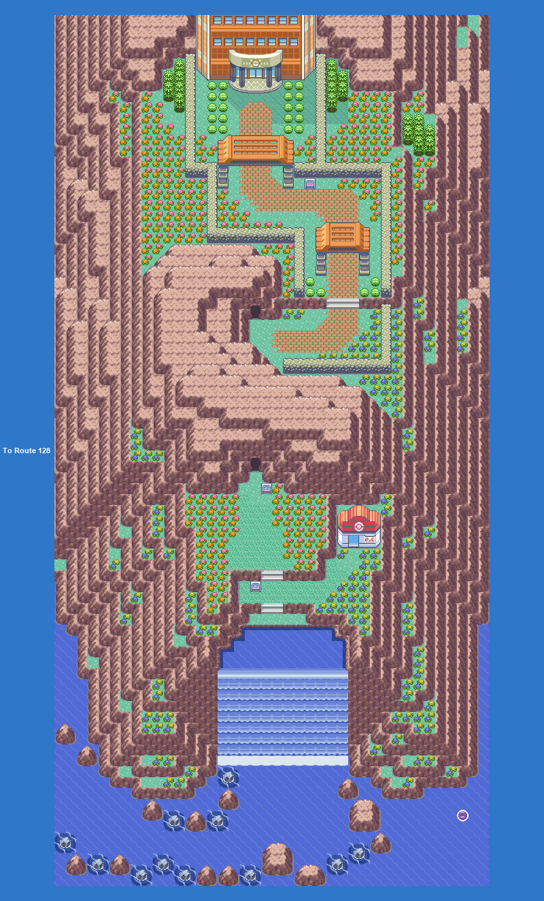
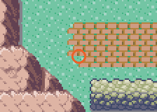
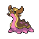
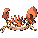
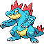

PokémonEMMA'S EMERALD
OFFICIAL Strategy Guide
Ever Grande City
TIP
No wild Pokémon in the grass here. Time of day: M = morning (6–10), D = day (10–19), E = evening (19–20), N = night (20–6).
Event 1: Ever Grande

The waterfall leads up to the League; Victory Road is the cave to the left.
Legendary Pokémon here
Melmetal
LV65
Steel
from Champion
Static encounters: walk up and press A. Caught = gone for good; beaten or fled = back next visit.
Catch ’Em All! Surfing
 | Tentacool: | LV5–35 | Common | MDEN |
 | Magikarp: | LV14–15 | Common | MDEN |
 | Binacle: | LV24–25 | Common | MDEN |
 | Poliwag: | LV21–23 | Common | MDEN |
 | Tympole: | LV13–14 | Common | MDEN |
 | Surskit: | LV7–9 | Uncommon | MDEN |
 | Psyduck: | LV23 | Uncommon | MDEN |
 | Corphish: | LV34–35 | Uncommon | MDEN |
 | Feebas: | LV25–27 | Uncommon | MDEN |
 | Wimpod: | LV30 | Rare | MDEN |
 | Quaxly: | LV20–21 | Rare | MDEN |
 | Carvanha: | LV21–22 | Rare | MDEN |
 | Oshawott: | LV31 | Rare | MDEN |
 | Dewpider: | LV24–26 | Rare | MDEN |
 | Ducklett: | LV21 | Rare | MDEN |
 | Mudkip: | LV27 | Rare | MDEN |
 | Panpour: | LV34 | Rare | MDEN |
Catch ’Em All! Old Rod
| Magikarp: | LV5–10 | Common | MDEN |
 | Wingull: | LV8–9 | Common | MDEN |
 | Sobble: | LV6–7 | Common | MDEN |
 | Chewtle: | LV7–8 | Common | MDEN |
 | Horsea: | LV6 | Common | MDEN |
Catch ’Em All! Good Rod
| Magikarp: | LV10–30 | Common | MDEN |
 | Popplio: | LV10–12 | Common | MDEN |
 | Lotad: | LV29 | Common | MDEN |
 | Corsola: | LV24–25 | Common | MDEN |
 | Chinchou: | LV10–11 | Common | MDEN |
 | Shellder: | LV13 | Common | MDEN |
 | Goldeen: | LV22–24 | Common | MDEN |
 | Finneon: | LV22–23 | Common | MDEN |
 | Clauncher: | LV27–28 | Common | MDEN |
Catch ’Em All! Super Rod
 | Luvdisc: | LV30–35 | Common | MDEN |
 | Paldean Tauros: | LV33–34 | Common | MDEN |
 | Relicanth: | LV44–45 | Common | MDEN |
 | Tatsugiri (Curly): | LV31–33 | Common | MDEN |
 | Finizen: | LV39 | Common | MDEN |
 | Cramorant: | LV31–32 | Uncommon | MDEN |
 | Pyukumuku: | LV30 | Uncommon | MDEN |
 | Wartortle: | LV39–40 | Uncommon | MDEN |
| Politoed: | LV38–39 | Uncommon | MDEN | |
 | Lapras: | LV40–42 | Rare | MDEN |
 | Wugtrio: | LV39–40 | Rare | MDEN |
 | Gastrodon (West): | LV42–44 | Rare | MDEN |
 | Kingler: | LV39–41 | Rare | MDEN |
 | Prinplup: | LV39–41 | Rare | MDEN |
 | Feraligatr: | LV37–39 | Rare | MDEN |
 | Frogadier: | LV44 | Rare | MDEN |
 | Octillery: | LV41 | Rare | MDEN |
145